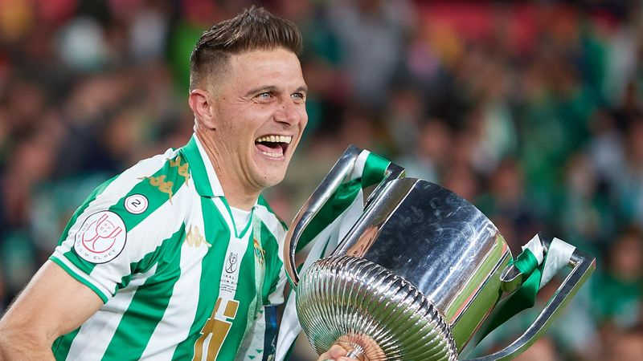

Official Website For Foot Goal

Official Website For Foot Goal
Leyenda del Real Betis Balompié

Joaquín Sánchez Rodríguez es un ex-futbolista español nacido en El Puerto de Santa María, Cádiz, el 21 de julio de 1981. Jugaba como extremo derecho y es el gran ídolo contemporáneo y leyenda viva del Real Betis Balompié. Conocido por su desborde, su finta inconfundible y su inmenso carisma, Joaquín es una de las figuras más queridas de la historia del fútbol español.
"El tenis no se me ha dado nunca bien... ¡Bueno, no he jugado en mi vida, Hulk!"
Joaquín debutó con el Real Betis en el año 2000, liderando el ascenso del equipo y convirtiéndose rápidamente en una estrella de La Liga. Su velocidad y capacidad para encarar le llevaron a la Selección Española, con la que disputó dos Mundiales (2002 y 2006) y una Eurocopa (2004). Tras ganar la Copa del Rey de 2005 con su amado Betis, fichó por el Valencia CF, donde volvió a coronarse campeón de Copa en 2008. Posteriormente, vivió una etapa dorada en el Málaga CF, alcanzando los cuartos de final de la Champions League, y probó suerte en Italia con la Fiorentina.
En 2015, hizo realidad el sueño de todos los béticos: su regreso a casa. En su segunda etapa, lejos de ser un mero retiro dorado, batió todos los récords de longevidad del fútbol español. Como capitán, levantó la histórica Copa del Rey de 2022 en el Estadio de La Cartuja de Sevilla. Se retiró en 2023 a los 41 años, empatando el récord histórico de Andoni Zubizarreta de más partidos disputados en Primera División (622). Joaquín no solo dejó su huella por su inmenso talento, sino por la alegría inconfundible que siempre transmitió dentro y fuera del campo.